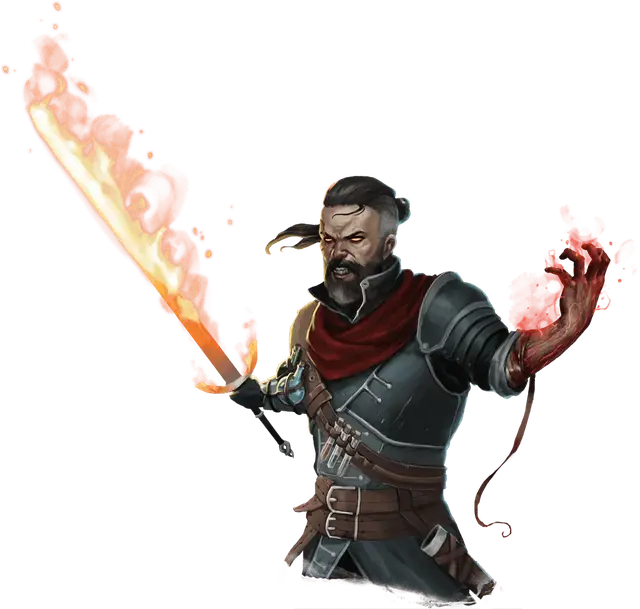

Кровавый охотник
Blood Hunter
Средний Гуманоид (Любая раса), любое мировоззрение

Класс Доспеха 16 (полулаты)
Хиты 65 (10к8 + 20)
Скорость 30 футов
| мод | спас | ||
|---|---|---|---|
| СИЛ | 18 | +4 | +7 |
| ЛОВ | 12 | +1 | +1 |
| ТЕЛ | 15 | +2 | +2 |
| мод | спас | ||
|---|---|---|---|
| ИНТ | 9 | −1 | −1 |
| МДР | 16 | +3 | +6 |
| ХАР | 11 | +0 | +0 |
Навыки Акробатика +4, Восприятие +6, Проницательность +6
Чувства тёмное зрение 60 футов, пассивное Восприятие 16
Языки один любой язык (обычно Общий)
Опасность 5 (1800 опыта)
Бонус мастерства +3
Особенности
Связывающее кровавое проклятие (1/день). Бонусным действием кровавый охотник нацеливается на одно существо, которое он может видеть в пределах 30 футов. Цель должна преуспеть в спасброске Силы Сл 14, иначе её скорость уменьшается до 0 и она не может использовать реакцию. Цель может повторять спасбросок в конце каждого своего хода, оканчивая на себя эффект в случае успеха.
Кровавое бешенство. Кровавый охотник совершает с преимуществом броски рукопашных атак по существам, у которых хиты ниже максимума.
Врождённое колдовство (1/день). Кровавый охотник может накладывать сглаз [hex]. Его базовой характеристикой является Интеллект.
Сопротивление магии. Кровавый охотник совершает с преимуществом спасброски от заклинаний и прочих магических эффектов.
Действия
Мультиатака. Кровавый охотник дважды атакует оружием.
Двуручный меч. . Рукопашная атака оружием: +7 к попаданию, досягаемость 5 футов, одна цель. Попадание: 11 (2к6 + 4) рубящего урона плюс 3 (1к6) урона огнём.
Тяжелый арбалет. . Дальнобойная атака оружием: +4 к попаданию, дистанция 100/400 футов, одна цель. Попадание: 6 (1к10 + 1) колющего урона.
Описание
Как для смертных, так и для монстров кровавый охотник — легендарная фигура - гуманоидный охотник, который, как говорят, обладает чудовищной силой. Много лет назад группа смертных проводила тёмные ритуалы и алхимические эксперименты, чтобы получить силу самых смертоносных монстров, что позволило им лучше охотиться на этих монстров.
Внешне, кровавые охотники достаточно суровы, но под этой бесстрастной маской скрываются бурлящие эмоции. Звериная ярость и бездонная печаль движут каждым ударом клинка кровавого охотника. Гуманоиды, которые навлекают на себя гнев кровавого охотника, часто находятся в сговоре с монстрами — или становятся жертвами ужасных заблуждений. Такие недоразумения трудно прояснить, потому что кровавые охотники - это такие люди, которые сначала убивают, а потом задают вопросы.